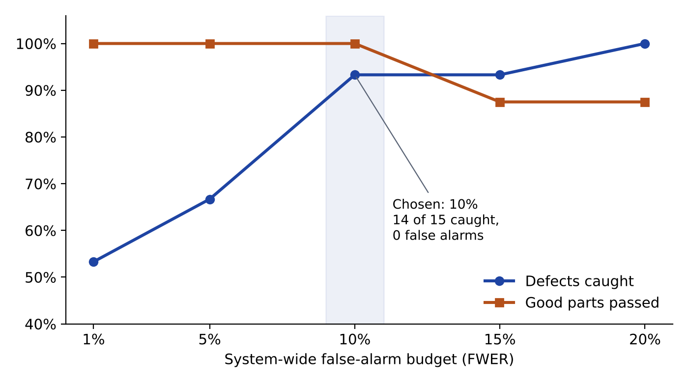
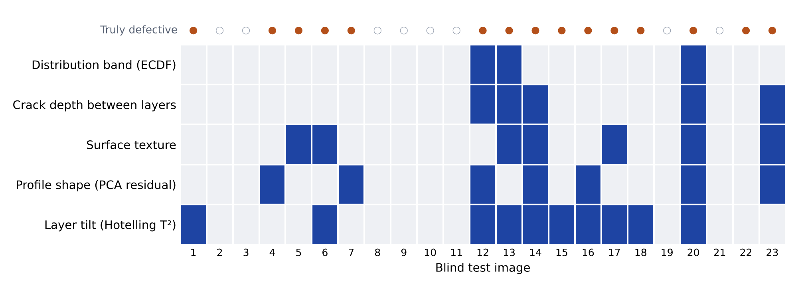

01 · Quality Data Analysis · Politecnico di Milano · Team of 4 · Top score
An alert system that catches 14 of 15 defects with zero false alarms
Camera images of a robotic 3D-printing process feed five statistical charts, each watching a different failure mode. The hard part was not building the detectors. It was running them together without flooding the line with false alarms.
My role
The team built two methods in parallel. I proposed the advanced one, drawn from the academic papers we were given, and built it from the image pipeline to the multi-chart network. It became the foundation of our final system.
How it works
- Learned “normal” from 132 images, then tested blind on 23 new ones with 15 real defects.
- Combined five complementary charts: a non-parametric ECDF band, crack depth between layers, texture, PCA reconstruction error and a Hotelling T² on layer slopes.
- Set one false-alarm budget for the whole system and split it across the charts with a Šidák correction, instead of tuning each chart on its own.
- The first version caught only 3 of 15. The diagnosis: contrast normalization was hiding exactly the dark pixels that cracks produce, so the final system works on raw intensities.
Why it transfers to a bank
Transaction monitoring and fraud detection share the same structure: many detectors on noisy data, a limited capacity to review alerts, and a need to explain each one. The decision is how to spend the false-positive budget, not which single model is best.
What I would check next
With 23 test images the result is directional: 14 of 15 has a 95% interval of roughly 70% to 99%. The budget was also chosen after seeing the test set, so it should be confirmed on fresh data.

